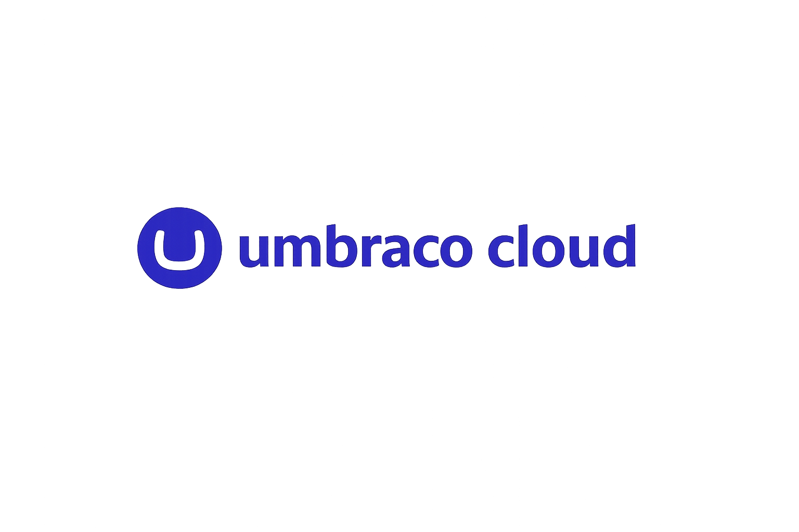

Umbraco Documentation
Examples, tutorials, references, and best practices—everything you need to build future-proof applications with Umbraco and it's available add-on products.
Whether you're using Umbraco CMS, Umbraco Cloud, or Umbraco Heartcore, the documentation has you covered for all your needs.
Umbraco CMS
Everything you need to know when building your Umbraco website.

Umbraco Cloud
Learn how to get started with your Umbraco Cloud project.
Are you looking to get started?
In the Getting Started section, you will find links to articles based on what you want to achieve with Umbraco.
Whether you're creating a website, setting up hosting, or customizing your Umbraco project, the Getting Started section has you covered. Head over to the Getting Started section.
Not sure which product is right for you?
If you're unsure which product suits your needs, check out the Exploring the Umbraco Products article.